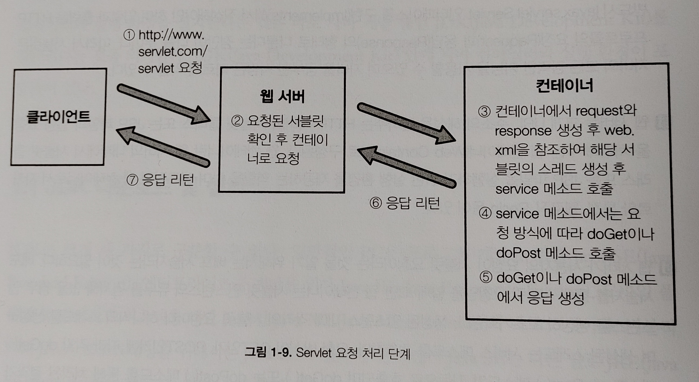

1. 사용자의 URL 요청
웹 서버가 배포 서술자를 통해 지금 받은 요청이 서블릿 요청이라는 것을 알게 되면 서블릿을 담당하는 웹 컨테이너로 그 요청을 전달한다.
🔸 배포 서술자(Deployment Descriptor)
- 사전에 웹 서버측에
URL과 서블릿 클래스를 미리 매핑시켜놓은 것
2. request, response 객체 생성
웹 컨테이너는 받은 요청을 처리하기 위해 HTTP 요청을 처리하기 위한 request 객체와 HTTP 응답을 위한 response 객체를 생성한다.
3. 서블릿 인스턴스와 스레드 생성
request, response 객체가 생성된 뒤 사용자의 URL 요청이 어떤 서블릿 클래스를 필요로 하는지 배포 서술자를 통해 알아낸다.- 그 클래스가 한 번도 실행된 적이 없거나 현재 메모리에
인스턴스(프로세스)가 없으면 새로 생성한 뒤 스레드를 하나 생성하고 이미 인스턴스가 존재한다면 기존의 인스턴스에 스레드만 하나 새로 생성한다.
- 각
서블릿 클래스는 웹 컨테이너당 하나만 존재한다.
4. service() 메소드 호출과 서블릿 클래스 실행
스레드가 생성되면 각 스레드에서 service() 메소드가 호출된다.service() 메소드가 호출되면 HTTP 요청 방식이 GET 방식이면 doGet() 메소드가, POST 방식이면 doPost() 메소드가 request, response 객체를 인자로 자동으로 호출된다.- 개발자가 실제로 동적인 웹 페이지 생성을 할 수 있는 코드를 만들어야 하는 부분이
doGet()과 doPost() 메소드 부분이다.
5. 응답과 스레드의 소멸
- 사용자의 요청에 따른 동적인 웹 페이지를 생성한 결과물이 담긴
response 객체를 웹 컨테이너가 HTTP 응답 형태로 바꾸어 웹 서버로 전송한다.
- 사용이 끝난
request와 response 객체를 소멸시키고 스레드를 종료한다.
- 웹 서버는 전송 받은 HTTP 응답 메시지를 사용자의 브라우저로 전송하게 되고 사용자는 브라우저를 통해 동적으로 생성된 페이지를 받아보게 된다.
